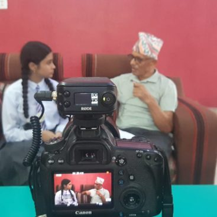
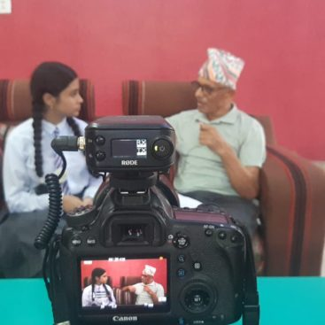
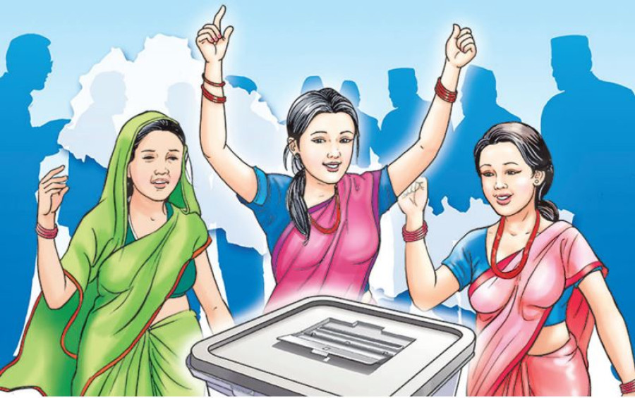
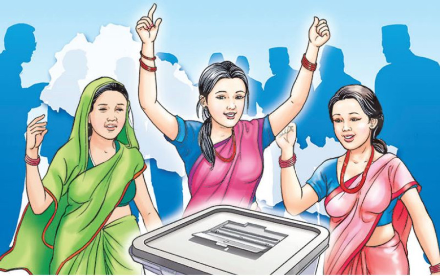

Connecting the climate change
Connecting the Climate Challenge (CCC) is an initiative of Engage Nepal with Science in collaboration with Tribhuvan University, Teach for Nepal and the Midlothian Council (UK, Scotland).
Connecting the climate change is mainly related to connecting different communities across Nepal and Scotland.The main objective of this activity is to connect the communities and work together to tackle the diveresified effect of climate change.Schools covering the main climatic areas of both Scotland and Nepal are the primary audience, as they act as excellent entry point to the wider community.
The aim of this initiative is to connect the different communities from different part of Nepal and scoutland to work together against the climate change and built a good relation with our members
CCC was originally supported in 2021 by the British Council as part of the COP 26 Creative Commissions for the Climate. From the beginning of 2022, this project has also been supported by the Eurofins Foundation. We also receive in-kind support from the Edinburgh Climate Change Institute.
Targeted Milestone
- Showcase the activity of communities through different media application
- Collect innovative ideas from young minds across Scotland and Nepal to tackle the problem of climate change
- Raise awareness through the different ecocommunities throughout different part of the country
Showcase the activity through social medias
Eco community works with various photographers,videographers and engage their communities using arts and media as platforms to empower in environmental education and promote environmental awareness.Through this the ecocommunities can share their work to the different users and members throughout the world and win awards.
Collect innovative idea from young mind
Considering the future Engage Nepal with science focuses the young minds for the solution of the problem of ongrowing climate change.We have been encouraging the young generation to contribute as much as they can considering the fact that they are the future of the country.We have also been sucessful grabing the attention of young minds and through their creativeness and broad range of ideas we have quiet been sucessful to bring slight change in the local level
Awareness through ecocommunities
Our eco communities are spreaded in different part of country which have common goals.They are desprately engaged in the campaigns to reduce the increasing climate change.We also have our focus gathered towards the rural areas.These areas are not awared about the day to day increasing global warming.Our teams also help to bring awareness in those parts to meet the goals of sustinable develop ment
Connecting the Climate Challenge (CCC) is an initiative of Engage Nepal with Science in collaboration with Tribhuvan University, Teach for Nepal and the Midlothian Council (UK, Scotland).
Connecting the climate change is mainly related to connecting different communities across Nepal and Scotland.The main objective of this activity is to connect the communities and work together to tackle the diveresified effect of climate change.Schools covering the main climatic areas of both Scotland and Nepal are the primary audience, as they act as excellent entry point to the wider community.
The aim of this initiative is to connect the different communities from different part of Nepal and scoutland to work together against the climate change and built a good relation with our members
CCC was originally supported in 2021 by the British Council as part of the COP 26 Creative Commissions for the Climate. From the beginning of 2022, this project has also been supported by the Eurofins Foundation. We also receive in-kind support from the Edinburgh Climate Change Institute.
Targeted Milestone
- Showcase the activity of communities through different media application
- Collect innovative ideas from young minds across Scotland and Nepal to tackle the problem of climate change
- Raise awareness through the different ecocommunities throughout different part of the country
.jpg)
Showcase the activity through social medias
Eco community works with various photographers,videographers and engage their communities using arts and media as platforms to empower in environmental education and promote environmental awareness.Through this the ecocommunities can share their work to the different users and members throughout the world and win awards.
Collect innovative idea from young mind
Considering the future Engage Nepal with science focuses the young minds for the solution of the problem of ongrowing climate change.We have been encouraging the young generation to contribute as much as they can considering the fact that they are the future of the country.We have also been sucessful grabing the attention of young minds and through their creativeness and broad range of ideas we have quiet been sucessful to bring slight change in the local level
Awareness through ecocommunities
Our eco communities are spreaded in different part of country which have common goals.They are desprately engaged in the campaigns to reduce the increasing climate change.We also have our focus gathered towards the rural areas.These areas are not awared about the day to day increasing global warming.Our teams also help to bring awareness in those parts to meet the goals of sustinable develop ment
Green Detectives
This programme Funded by the European Society for Evolutionary Biology (ESEB).
Climate change has also caused significant effect in the Neplese ecosystem.The project aims to boost the knowledge of high-school students in the area of natural genetic evolution versus the rapid evolution that species suffer due to climate change.
We have targetted this project specially in the hight school student
Green detective is mainly focused about spreading the awareness through workshop, a virtual game and a competition.After playing the game, schools will participate in a competition where they will present their observations. The project with most votes will receive a prize.
.jpg ) 

Women Empowerement
Women's empowerment may be defined in several ways, including accepting women's viewpoints, making an effort to seek them and raising the status of women through education, awareness, literacy, and training.
Our team is mainly focused towards empowering woman in the rural areas of Nepal as we founded out the problem of woman backwardness and we have been working actively to overtake it
 

Cell and DNA
These set of workshops aim to understand about cells while studying them under the microscope. We explore prokaryotic and eukaryotic cells, animal and plant cells and discuss the importance of DNA.- The history of cells
- Do Kiwi have a DNA
- DNA journey
- Zooming in: using microscopes
Website of Engage Nepal With Science
CONNECT WITH US


PRIVACY POLICY
ENGAGE NEPAL WITH SCIENCE © ALL RIGHTS RESERVED